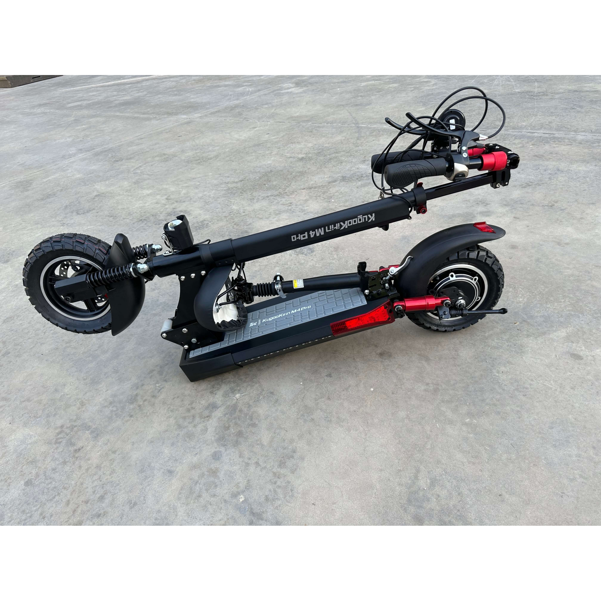
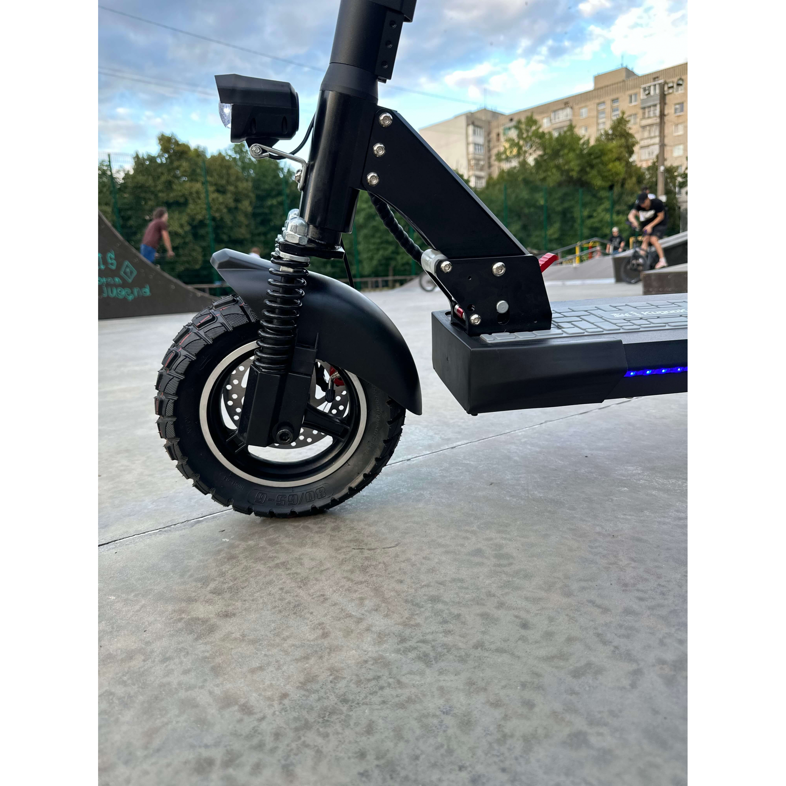

X
Електросамокат KUGOO Kirin M4 PRO


Характеристики:
• Потужність 1000 Вт Ємність аккумулятору 18Ah Максимальна швидкість до 45 км/год Габарити ДхШхВ 120х31х37
Представляємо електросамокат KUGOO Kirin M4 PRO - потужний і високопродуктивний транспортний засіб, що поєднує в собі виняткові технічні характеристики з витонченим дизайном. Розроблений для тих, хто прагне швидкості та витривалості, цей самокат пропонує захопливий досвід на дорозі.
Завдяки двигуну потужністю 1000 Вт, KUGOO Kirin M4 PRO забезпечує виняткову потужність та прискорення. Відчуйте захопливу їзду, швидко переміщуючись міськими вулицями. Незалежно від того, чи ви їдете на роботу, чи просто насолоджуєтесь прогулянкою, цей самокат пропонує захопливий та ефективний спосіб пересування.
Оснащений акумулятором місткістю 18 Ач, Kirin M4 PRO забезпечує дивовижний пробіг до 45 км на одному заряді. Попрощайтеся з тривогою про запас ходу, коли ви впевнено досліджуєте навколишнє середовище. Цей самокат ідеально підходить для тривалих подорожей і дозволяє дістатися до місця призначення, не турбуючись про те, що батарея розрядиться.
Відчуйте гострі відчуття, розвиваючи швидкість до 45 км/год з KUGOO Kirin M4 PRO. Насолоджуйтесь свободою та азартом їзди у швидкому темпі, не відстаючи при цьому від потоку транспорту. Цей самокат створений для тих, хто жадає швидкості та хоче швидко дістатися до місця призначення.
KUGOO Kirin M4 PRO - це не лише потужність та швидкість, але й комфорт та довговічність. Він має міцну та надійну конструкцію, яка може впоратися з різними місцевостями та витримати щоденне використання. Високоякісні шини забезпечують відмінне зчеплення з дорогою, гарантуючи плавний і стабільний хід.
Безпека є пріоритет для Kirin M4 PRO. Самокат оснащений надійною гальмівною системою, яка забезпечує швидку і точну зупинку, дозволяючи вам їздити з упевненістю. Крім того, самокат оснащений яскравими світлодіодними фарами та задніми ліхтарями, які покращують видимість і гарантують, що вас побачать інші, особливо в умовах недостатнього освітлення.
Розроблений для зручності користувача, KUGOO Kirin M4 PRO складається, що полегшує його зберігання та транспортування. Незалежно від того, чи потрібно вам взяти його в громадський транспорт або зберігати в обмеженому просторі, цей самокат пропонує безпроблемне перенесення та зберігання.
Ціна -18889 грн
Купити